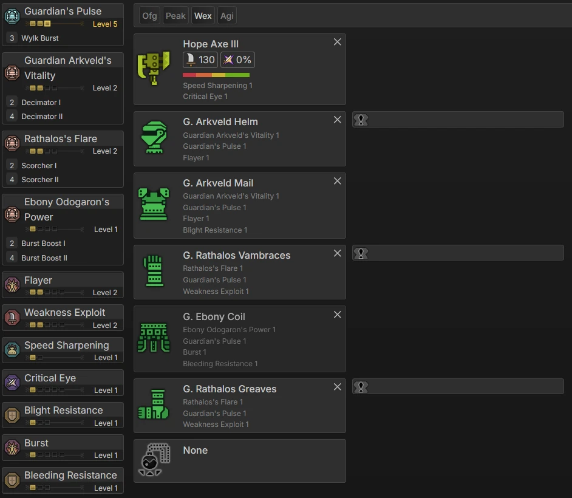
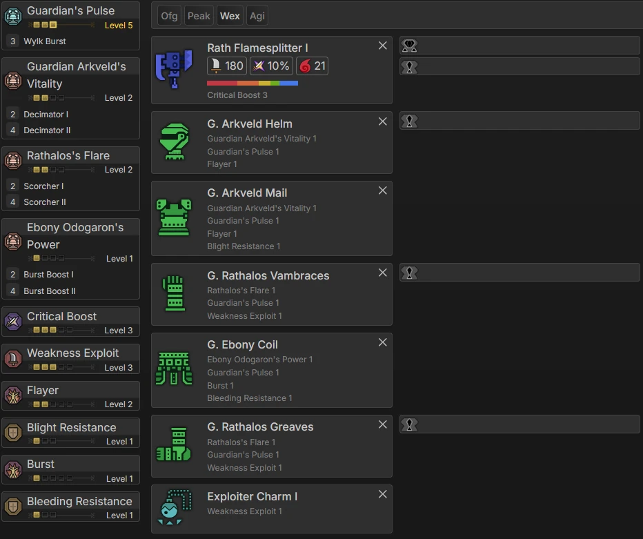
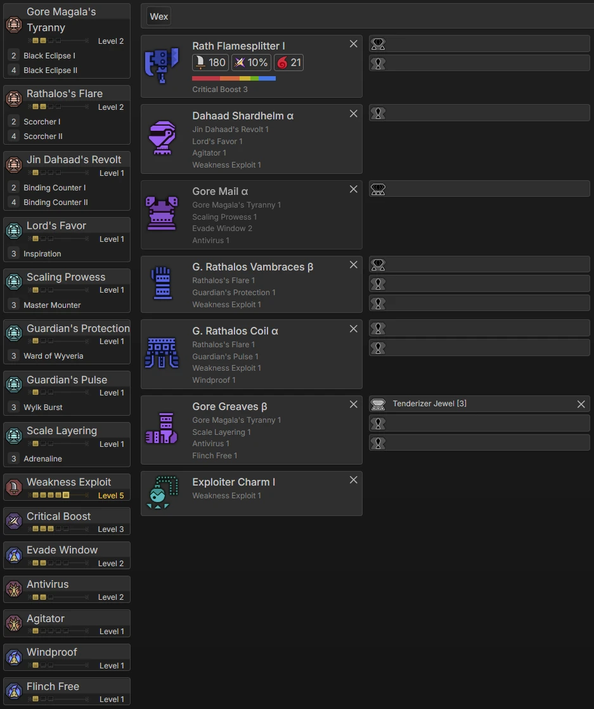
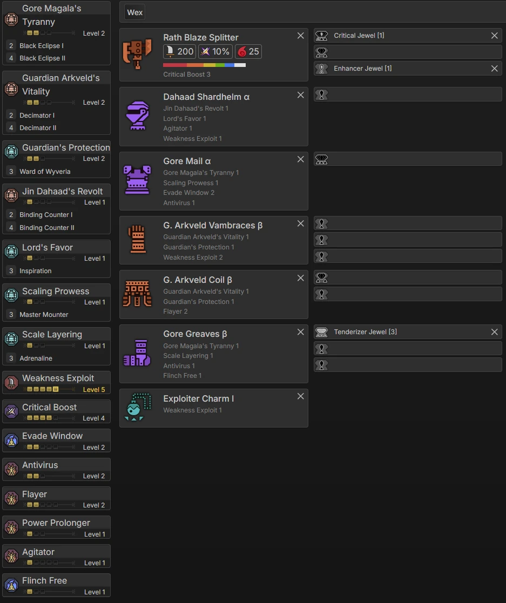

This progression Guide is aimed at players who are new to the franchise, feel overwhelmed by all the options and choices the game offers, and those who are just looking for a refresher or need some pointers for what to look out for during progression.
The Sets themselves aim to support you, from the start of the game all the way until the Endgame. From there, you should be in a great spot to follow the Endgame sets, accessible through the sidemenu or the buttons at the end of the page.
Monster Hunter Wilds Progression has an extremely railroaded Low Rank Story, that consists of a total of 20 hunts. Most of the sets don’t really do a whole lot of anything, usually providing, at best, a higher defense stat, which is somewhat important very early on in order to press Full Release more. Hope Axe II is upgradable from the moment you unlock upgrading, Gemma provides the mats for it. Most hunts are not very challenging, and the majority of sets are strictly not worth it. One of the available Weapons early on is the Lala Barina Axe, which ends up having good stats in endgame. Power Phial is strictly preferred in this game, and sharpness is a major pain point, so having a solid bar of the highest available tier is really, really good. Once you unlock the Doshaguma hunt, its set becomes available. The 4 Piece Set bonus it gives grants +25 Attack after a successful offset. If you’re good with those, it’s the first actual offensive Set available, but overall not worth the effort. This should easily bring you into Chapter 2.
After the Rey hunt in early chapter 2, Hope Axe 3 becomes craftable as an upgrade. 2 hunts later, Hirabami is unlocked. As previously noted, the main purpose of this set is having more than 5 defense, so that Full Release and Counter are less likely to end with a cart. Evade Window 5 is nice, but ultimately doesn’t do much if you’re already Countering and Full Releasing (which you should be). Nu Udra at the end of Chapter 2 is a contender too, equipping any 2 pieces with a total of at least 1 level of resentment grants some extra damage, sometimes, while resentment is active. As before, it is very optional to go for it.
The second hunt in Chapter 3, and we finally unlock a set with actual skills on it. After a bit of story, Guardian Ebony is unlocked, which is a set favoured by many people. The Coil in particular is easy to make and provides 1 level of Burst, which is better than most other pieces at this point in the game. Immediately after, Xu Wu is unlocked, which has one of the best craftable Swaxes in the game. It’s a strong consideration to make it, but due to how the later sets shape up to be, it’s unlikely to see the use a weapon with its stats deserves. A little bit later, Guardian Arkveld unlocks as one of the final hunts of the story. With it’s helmet and chest, the previously started set can be rounded out nicely, resulting in the following:

Open image in new tab
Guardian Rathalos Feet and Arms are recommended to craft here. The helmet is good too, but requires a plate to make. If you don’t have that, it’s completely fine to skip.
After the Junky chicken hunt, we leave the railroad and finally get to do our thing. Of the monsters that now unlock, the biggest ones are the two Raths. Rathalos comes with built-in Critical Boost 3, which is really nice for budgetDeco Poor; low amount of Decorations obtained sets, and will be the recommended from here on out. Make sure you hunt a Chatacabra and Rathian, as those materials are required to craft the Weakness Exploit I charm. The resulting set will last you for pretty much the rest of the game:

Open image in new tab
From this point onward, the recommended way to progress is doing Side Quests. They unlock the “farms”, some new systems like random villagers inviting you to dinner, the Power and Armor charm for some free Raw, aswell as some decoration melding options.
After doing them, you should be well on your way to Hunter Rank 40, which is the next big monster unlock of the game.
Like most sets before, this one is largely optional, but showcases the general idea the Sets in this game are going. The G. Los Set bonus really just exists and its impact (or lack thereof) will not be missed.
It requires 1 Weakness Exploit decoration, which shouldn’t be too rare, but in case you can’t find it, don’t sweat it. Generally speaking, more affinity is wanted. One of the best skills for swaxe currently is Counter Strike, which is a 2-Slot skill and heavily recommended.

Open image in new tab
From this point onward, the recommended way to progress is doing Side Quests. They unlock the “farms”, some new systems like random villagers inviting you to dinner, the Power and Armor charm for some free Raw, aswell as some decoration melding options.
After doing them, you should be well on your way to Hunter Rank 40, which is the next big monster unlock of the game.
The next unlock of the game. The following set serves as a good (budget) entrance to the endgame grind. The 2 piece Guardian Arkveld set makes for a very comfy base, as every wound pop heals you for 25 Health. Gore is the main source of affinity, and Wex is Wex. By this point, the upgrade for Exploiter Charm I becomes available, with which you can drop the Tenderizer Decoration. Despite the nerfs to Crit, it’s not only the best direction to build a set, it’s also with even less competition, because most other skills are either nerfed or have nearly unmaintainable activation conditions.

Open image in new tab
From here, consider following the Endgame Guide via the Side Menu or the buttons on the bottom of the page.